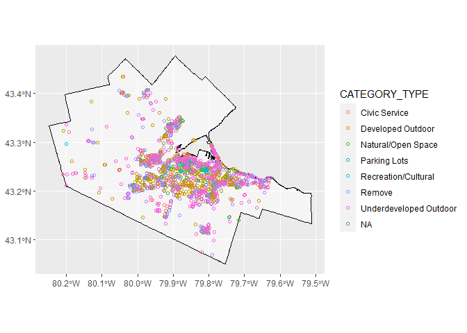

The goal of HamONdest is to compile all potential destinations (Schools, municipally-owned land, parks, libraries, etc.) and their estimated ‘supplies’ in Hamilton, Ontario, Canada all in one data-package to facilitate the calculation of accessibility and mobility measures in the transportation planning context. The majority of data is sourced from Hamilton’s Open Data Portal and is augmented with additional open data from higher levels of government (provincial and federal), predicted values, and/or data from OpenStreetMap.
Installation
You can install the released version of HamONdest using:
if(!require(remotes)){
install.packages("remotes")
library(remotes)
}
remotes::install_github("soukhova/HamONdest-package",
build_vignettes = TRUE)Examples
#>
#> Attaching package: 'dplyr'
#> The following objects are masked from 'package:stats':
#>
#> filter, lag
#> The following objects are masked from 'package:base':
#>
#> intersect, setdiff, setequal, unionThe data package contains the following destinations in Hamilton, Ontario.
Schools
Elementary and Secondary Public and Public Catholic Schools in 2011, size based on on-the-ground-capacity (OTGC)
ggplot() +
geom_sf(data = Ham_CityBound,
size = 0.5,
alpha = 0.5,
color = "black",
fill = "white") +
geom_sf(data = Schools_201516_201011 %>% filter(Year != "2016"),
aes(col = OTGC2011),
shape = 1,
size = 3) +
scale_color_distiller(palette = "Spectral")Elementary and Secondary Public and Public Catholic Schools in 2016, size based on on-the-ground-capacity (OTGC)
ggplot() +
geom_sf(data = Ham_CityBound,
size = 0.5,
alpha = 0.5,
color = "black",
fill = "white")+
geom_sf(data = Schools_201516_201011 %>% filter(Year != "2011"),
aes(col = OTGC2016),
shape = 1,
size = 3) +
scale_color_distiller(palette = "Spectral") ### Municipally-Owned Properties (Parks, Open Space, Vacant Land, + Properties with civil services like fire stations, police station, community centres, etc.) Up-to-date City-Owned Property with person destination potential. Sourced from Open Data Hamilton.
### Municipally-Owned Properties (Parks, Open Space, Vacant Land, + Properties with civil services like fire stations, police station, community centres, etc.) Up-to-date City-Owned Property with person destination potential. Sourced from Open Data Hamilton.
ggplot() +
geom_sf(data = Ham_CityBound,
size = 0.5,
alpha = 0.5,
color = "black",
fill = "white")+
geom_sf(data = City_Owned_Property,
aes(col = CATEGORY),
shape = 1) 
More Information
Coordinate system of all data:
sf::st_crs(Schools_201516_201011)
#> Coordinate Reference System:
#> User input: EPSG:4326
#> wkt:
#> GEOGCRS["WGS 84",
#> DATUM["World Geodetic System 1984",
#> ELLIPSOID["WGS 84",6378137,298.257223563,
#> LENGTHUNIT["metre",1]]],
#> PRIMEM["Greenwich",0,
#> ANGLEUNIT["degree",0.0174532925199433]],
#> CS[ellipsoidal,2],
#> AXIS["geodetic latitude (Lat)",north,
#> ORDER[1],
#> ANGLEUNIT["degree",0.0174532925199433]],
#> AXIS["geodetic longitude (Lon)",east,
#> ORDER[2],
#> ANGLEUNIT["degree",0.0174532925199433]],
#> USAGE[
#> SCOPE["unknown"],
#> AREA["World"],
#> BBOX[-90,-180,90,180]],
#> ID["EPSG",4326]]This data package is still a work in progress. See additional visualizations and uses in the Vignettes.
The change in Elementary and Secondary Public and Public Catholic Schools between 2011 and 2016.
ggplot() +
geom_sf(data = Ham_CityBound,
size = 0.5,
alpha = 0.5,
color = "black",
fill = "white")+
geom_sf(data = Schools_201516_201011 %>% filter(Status != "NoChange"),
aes(col = Status, size = Level),
shape = 1) City-Owned Property with person destination potential
ggplot() +
geom_sf(data = Ham_CityBound,
size = 0.5,
alpha = 0.5,
color = "black",
fill = "white")+
geom_sf(data = City_Owned_Property %>% filter(CATEGORY_TYPE != "Remove" & CATEGORY_TYPE != "Parking Lots"),
aes(col = CATEGORY_TYPE, size = PROP_AREA),
shape = 1)